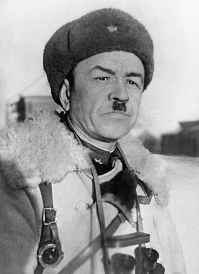
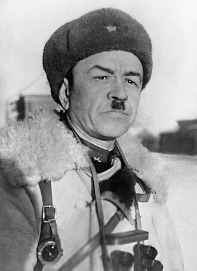

Бауржан Момышулы и «За нами Москва»
Великая Отечественная война (1941–1945) стала одним из самых трагических и героических периодов в истории Советского Союза. Она оставила глубокий след в мировой литературе, особенно в произведениях писателей-фронтовиков, которые передавали подлинную атмосферу боевых действий, трагедии и героизма солдат. Одним из таких писателей был Бауржан Момышулы – легендарный командир, участник обороны Москвы и автор книги «За нами Москва».
Бауржан Момышулы – один из самых известных казахских военачальников и писателей XX века. Он родился в 1910 году в Казахстане, а в годы Великой Отечественной войны был командиром батальона 316-й стрелковой дивизии (будущей 8-й гвардейской дивизии имени Панфилова). Особую известность он получил в битве за Москву в 1941 году, где проявил себя как храбрый и талантливый тактик.
Опыт войны нашел отражение в его литературном творчестве. Книга «За нами Москва» основана на реальных событиях и личных воспоминаниях автора, что делает ее ценным источником для понимания войны не только как исторического события, но и как сложного испытания для человеческого духа.
Роман «За нами Москва» посвящен битве за Москву, одной из ключевых операций Великой Отечественной войны. В нем описываются оборонительные и контрнаступательные действия советских войск под командованием генерала Панфилова, к которым относился и батальон Момышулы.
Одним из центральных эпизодов книги является героическая оборона Волоколамского направления, когда небольшие подразделения Красной армии сдерживали натиск численно превосходящего противника. Автор подробно описывает тактические приемы, использовавшиеся советскими солдатами: маневренную оборону, ночные атаки, использование местности для внезапных ударов.
В книге также показаны суровые условия войны – жестокие морозы, нехватка продовольствия и боеприпасов, психологическое напряжение. Однако на первом плане остается непоколебимая стойкость бойцов и их вера в победу.
2.2 Анализ произведений о Великой Отечественной войне
Произведение Бауржана Момышулы «За нами Москва» посвящено подвигу советских солдат в Великой Отечественной войне. Оно рассказывает о героической обороне Москвы в 1941 году, когда бойцы 316-й стрелковой дивизии под командованием генерала Ивана Панфилова остановили продвижение немецких танков. Героизм и самопожертвование – в центре повествования стоит подвиг 28 бойцов, которые сражались до последнего, уничтожив множество вражеской техники. Автор показывает беззаветную любовь солдат к Родине, готовность отдать жизнь за свободу страны.
Военное братство – бойцы Панфиловской дивизии действуют как единое целое, поддерживая друг друга в самые трудные моменты. В произведении описаны тактика и стратегия войны – описаны приемы ведения боя, военная дисциплина и командование. «За нами Москва» – произведение, основанное на реальных событиях. Автор произведения передает очень тонко внутренний мир героев, их страхи, сомнения и решимость. Произведение Бауржана Момышулы – не просто военный рассказ, а дань уважения героям, которые ценой своих жизней защитили Москву и внесли вклад в Победу.
 
